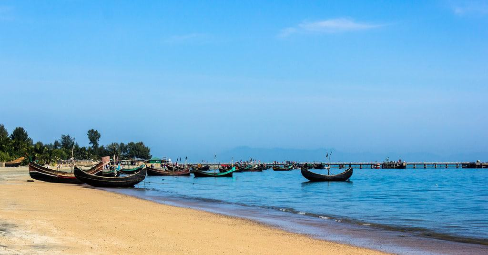

ST MARTIN ISLAND

Saint Martin is an island in the northeast Carribean Sea, approximately
300km east of Puerto Rico. The 87-square-kilometer island is divided roughly
between the French Republic and the Kingdom of the Netherlands, but the two
parts are roughly equal in population. The main cities are Philipsburg on
the Dutch side and Marigot on the French side. The Dutch side is more
heavily populated. The largest settlement on the entire island is Lower
Prince's Quarter, which is on the Dutch side.